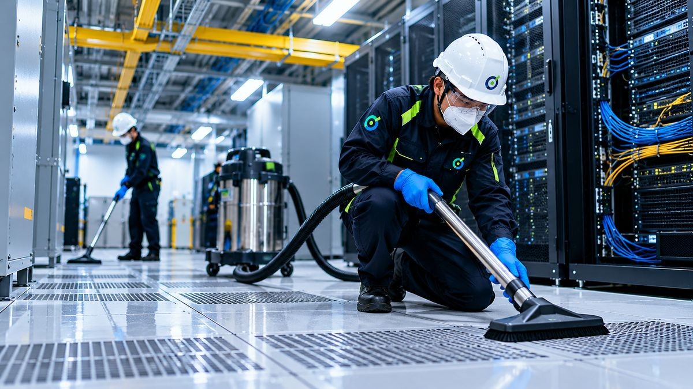
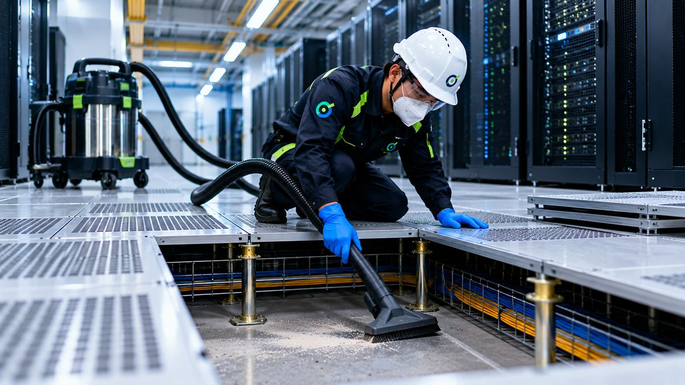
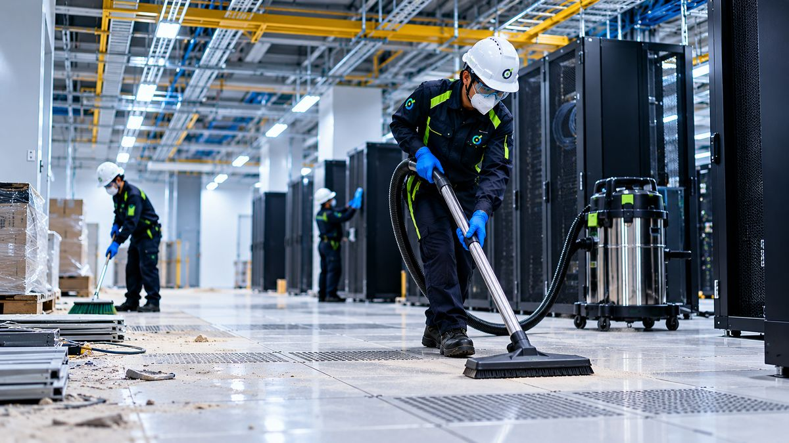
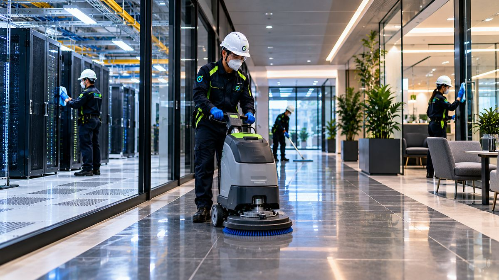

Technical Area Cleaning
Cleaning of server rooms, data halls, network rooms and telecom spaces using ESD-safe methods and HEPA-filtered equipment.
Every data center is different. We deliver customized cleaning plans based on your facility, operations and security requirements.
Each service can be delivered as a standalone scope or as part of a planned facility programme.

Cleaning of server rooms, data halls, network rooms and telecom spaces using ESD-safe methods and HEPA-filtered equipment.

Specialized cleaning beneath raised floors with HEPA filtration to remove dust from airflow paths and pedestal areas.

Fine dust, debris and residues removed before commissioning or handover.
Rapid-response cleaning after incidents or contamination events, and specialist cleaning of live critical areas where uptime must be protected, using HEPA filtration and ESD-safe equipment.

Corridors, offices, entrances and support spaces can be handled within the same controlled programme.
Planned service windows and urgent remediation are structured around operational continuity.
We combine the right equipment with controlled movement, careful sequencing and site-specific procedures.
Plan work around the facility layout, airflow behaviour and contamination pathways.
Use ESD-aware materials and controlled handling around sensitive technical equipment.
Use particle measurement and documentation when required by the agreed scope.
Tell us the facility, size and preferred service window.